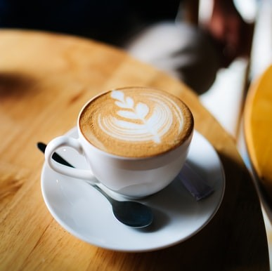

О НАС


Чуть больше, чем 2 года назад, «сошедшие с ума» инженер и педагог,
заручившись поддержкой родных, «окунулись в пучину» маленького семейного
бизнеса.
Только благодаря вере и помощи нашей семьи, которая была рядом каждый прожитый день, мы смогли преодолеть трудности, мы смогли оказаться рядом с Вами!
Только благодаря вере и помощи нашей семьи, которая была рядом каждый прожитый день, мы смогли преодолеть трудности, мы смогли оказаться рядом с Вами!
Кафе-кондитерская «Кокон» распахнула двери для своих посетителей 4 мая
2019 года. А 27 декабря 2020 года открылся «Кокон 2».
Каждое утро мы с любовью выпекаем для вас свежие круассаны, готовим нежную творожную запеканку и наши невероятные десерты.
Каждое утро мы с любовью выпекаем для вас свежие круассаны, готовим нежную творожную запеканку и наши невероятные десерты.


Друзья, с чем у вас ассоциируется название КОКОН?
С уютом, защищенностью, совершенными и мягкими формами. Всё это нашло отражение в нашей кафе-кондитерской, которая радует гостей стильным, и в то же время спокойным интерьером, комфортом, чудесным кофе и изумительными, а самое главное — полезными, десертами.
С уютом, защищенностью, совершенными и мягкими формами. Всё это нашло отражение в нашей кафе-кондитерской, которая радует гостей стильным, и в то же время спокойным интерьером, комфортом, чудесным кофе и изумительными, а самое главное — полезными, десертами.